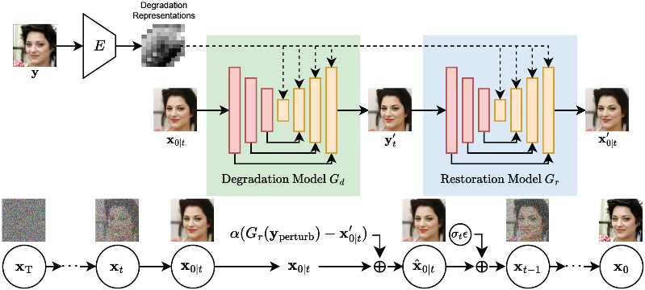

|
Ren Wang |
I am a senior software engineer at Google Taiwan, where I work on machine learning and computational photography for Pixel Camera. Before Google, I was a senior algorithm engineer at MediaTek.
In addition, I am doing my PhD in the Department of CSIE at National Taiwan University, where I am advised by Yung-Yu Chuang. I am interested in making AI models more robust, interpretable, and controllable, with the aim of helping real-world problems.
Publications
|  |
Boosting Diffusion Guidance via Learning Degradation-Aware Models for Blind Super Resolution
WACV
2025
Oral Presentation
|

|
Bridging Unsupervised and Supervised Depth from Focus via All-in-Focus Supervision
ICCV
2021
|

|
Explorable Tone Mapping Operators
ICPR
2021
|

|
Learning Camera-Aware Noise Models
ECCV
2020
|